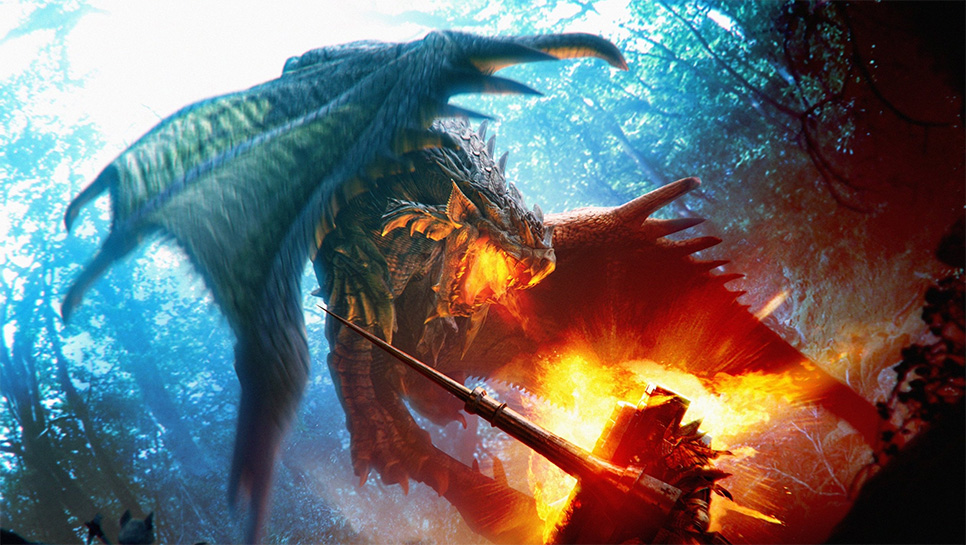

Intro To Monster Hunter
The Monster Hunter franchise is a series of fantasy-themed action role-playing video games that started with the game Monster Hunter for PlayStation 2. The series is developed and published by Capcom. As the title suggests, the player takes the role of a hunter in a fantasy environment and completes quests by hunting out specific kinds of monsters to kill or capture.

Shagaru Magala
.Having reached adulthood, Shagaru Magala's physical abilities are greatly enhanced; they are much stronger, more agile, and most of all, more ferocious. Their normal state is like that of an enraged Gore Magala, but with more variety of attacks and evasive maneuvers.